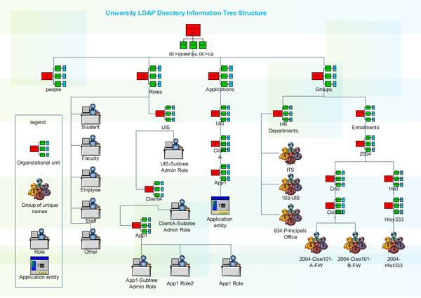

Servidores Web y PaaS
Sesión 3: Seguridad declarativa en WildFly (JAAS)
Índice
- Implementación de la seguridad declarativa en WildFly
- Administración de usuarios y grupos con RealmDirect
- Configuración de un login module basado en BD
- Integración con un servidor LDAP Externo
» Implementación de la seguridad declarativa en WildFly
Conceptos básicos (I)
- Usuarios, grupos y roles: identifican y clasifican usuarios. WildFly combina los conceptos de grupo y rol.
- Políticas de seguridad: La definición concreta de quien tiene acceso a un recurso u operaciones.
- Dominios de seguridad: Configuración de autenticación/autorización del servidor. Implementan JAAS.
Conceptos básicos (II)
Mecanismos de autenticación en la capa de transporte:
- None: Acceso anónimo
- N/A: Acceso Local a JBoss/WildFly
- Digest: Hash calculado a partir de la password
- Basic: Passwords en plano
- Client Cert: Certificados de cliente
Security Realms
- Son almacenes de usuarios/passwords.
- Asociados a interfaces de entrada del servidor.
- De inicio, WildFly contiene dos realms:
- ManagementRealm: securiza el acceso a las herramientas de administración.
- ApplicationRealm: autenticación y autorización en las aplicaciones desplegadas.
ManagementRealm
<local default-user="$local" skip-group-loading="true"/>
<properties path="mgmt-users.properties" relative-to="jboss.server.config.dir"/>
<properties path="mgmt-groups.properties" relative-to="jboss.server.config.dir"/>
- Se distingue entre accesos locales o remotos. (sin seguridad para los locales)
- Se pueden crear grupos de usuarios y asociarlos posteriormente con roles RBAC.
ApplicationRealm
<local default-user="$local" allowed-users="*" skip-group-loading="true"/>
<properties path="application-users.properties" relative-to="jboss.server.config.dir"/>
<properties path="application-roles.properties" relative-to="jboss.server.config.dir"/>
- Almacena usuarios y roles.
- Se utiliza tanto en accesos internos como en externos (Remoting)
Security Domains / Login Modules
- Definen las políticas de autenticación y autorización del servidor de aplicaciones.
- Configuran al menos un Login Module que implementa estas políticas.
- Other es el Security Domain por defecto de WildFly y está preparado para trabajar con el Application Realm.
Security Domains / Login Modules
<module-option name="password-stacking" value="useFirstPass"/>
<module-option name="password-stacking" value="useFirstPass"/>
<policy-module code="Delegating" flag="required"/>
<policy-module code="Delegating" flag="required"/>
Propiedades de los Login Module
- Se ejecutan en el orden indicado en el Security Domain
- flag: define cómo se tiene que combinar el resultado parcial de un login module con el resto de módulos.
- Required: El usuario debe validarse con éxito necesariamente. Independientemente del resultado serguirá ejecutando el resto de login modules
- Requisite: Similar a Required, pero si falla la autenticación ya no se continua con el resto de login modules.
Propiedades de los Login Module
- Sufficient: El usuario intentará validarse, si falla lo intentará con el resto de login modules, pero si es autenticado, el proceso termina en ese punto.
- Optional: El usuario intentará validarse, aunque no necesariamente tiene porqué tener éxito. Si todos los login modules están configurados como optional, necesariamente tendrá que validarse con al menos uno de ellos.
Propiedades de los Login Module
- password-stacking: define como se tiene que combinar la información de usuario/password de diferentes login/modules.
- useFirstPass: las credenciales que prevalecen son las del primer login module que autentique al usuario. El resto de login modules sólo contribuyen aportando información adicional de roles.
- En el caso de múltiples login modules se recomienda el flag Required si queremos que todos ellos aporten información de roles.
Activación del log de auditoría
- ¡Muy útil para resolver errores!
...
<pattern-formatter pattern="%d{HH:mm:ss,SSS} %-5p [%c] (%t) %s%E%n"/>
<file relative-to="jboss.server.log.dir" path="audit.log"/>
<suffix value=".yyyy-MM-dd"/>
<append value="true"/>
<level name="TRACE"/>
<handler name="AUDIT"/>
» Administración de usuarios y roles con RealmDirect
- Mediante el script add-user.sh podemos dar de alta usuarios en el ApplicationRealm y grupos (roles) asociados.
- Codificación de los usuarios:
username=HEX(MD5(username ':' realm ':' password)) experto=579f4faae456fd4b742f89e35fa935e2 admin=c22052286cd5d72239a90fe193737253 - Los roles se almacenan en texto plano:
experto=Users
admin=Administrators
Realm Personalizado
- Si tenemos varias aplicaciones en un servidor, podemos separar los ficheros de usuarios definiendo un nuevo realm.
- El parámetro realm del login module RealmDirect permite seleccionar un Realm distinto al por defecto.
- El script add-user.sh sólo trabaja con los Realm predefinidos. Codificación manual de usuarios.
» Configuración de un login module basado en BD
Autenticación contra BD
Login module Database
CREATE TABLE USERS (
principal_id VARCHAR(64) primary key,
password VARCHAR(64));
;
CREATE TABLE ROLES (
principal_id VARCHAR(64) primary key,
user_role VARCHAR(64),
;
ALTER TABLE ROLES
ADD CONSTRAINT FK1_PRINCIPLES
FOREIGN KEY ( principal_id)
REFERENCES USERS (principal_id)
ON DELETE CASCADE
;
Autenticación contra BD
- Crear el modelo de datos de usuarios/roles.
- Crear un datasource específico en WildFly.
- Nuevo Security Domain, con login module Database.
# Crear un nuevo security domain con seguridad basada en base de datos
batch
connect
# Configure the security domain
/subsystem=security/security-domain=seguridad-db/:add(cache-type=default)
/subsystem=security/security-domain=seguridad-db/authentication=classic:add(login-modules=[{"code"=>"Database", "flag"=>"required", "module-options"=>[("dsJndiName"=>"java:jboss/datasources/seguridad"),("principalsQuery"=>"SELECT PASSWORD FROM USERS WHERE principal_id = ?"), ("rolesQuery"=>"SELECT user_role, 'Roles' FROM ROLES where principal_id = ?")]}])
# Run the batch commands
run-batch
# Reload the server configuration
:reload
Encriptación de las password
- Por defecto WildFly trabaja con passwords almacenadas sin encriptar.
- WildFly tampoco ayuda a la hora de codificar las password en base de datos.
- Especificar un algoritmo de encriptación:
<module-option name="password-stacking" value="useFirstPass"/>
<module-option name="hashAlgorithm" value="MD5"/>
<module-option name="hashEncoding" value="hex"/>
Aplicación web de ejemplo (I)
Servlet habilitado para roles específicos:
@WebServlet("/listado")
@ServletSecurity(@HttpConstraint(rolesAllowed = { "rol_usuario","rol_administrador" }))
public class ConsultaServlet extends HttpServlet {
@Resource(mappedName = "jdbc/seguridad")
DataSource segDS;
protected void processRequest(HttpServletRequest request,
HttpServletResponse response)
throws ServletException, IOException {
Aplicación web de ejemplo (II)
web.xml
30
index.jsp
BASIC
Mi dominio de seguridad
<description />
rol_usuario
<description />
rol_administrador
Aplicación web de ejemplo (III)
Descriptor específico de WildFly jboss-web.xml, en la carpeta WEB-INF.
/intranet
mi-dominio
Especificamos el Security Domain a utilizar.
» Integración con un servidor LDAP Externo
LDAP (Lightweight Directory Acces Protocol)
- Protocolo de tipo cliente-servidor para acceder a un servicio de directorio.

LDAP (Lightweight Directory Acces Protocol)
- Protocolo de tipo cliente-servidor para acceder a un servicio de directorio.
- Mnemotécnicos más importantes:
- dn (distinguished name) Es el nombre asociado a un objeto concreto para su localización.
- cn (Common Name) Nombre descriptivo de un objeto
- dc (Domain component) Es un «directorio» del árbol de LDAP.
- ou (Organizational Unit) Departamentos o grupos de trabajo.
- Instalar el servidor SLDAPd ejecutando los comandos:
sudo apt-get update sudo apt-get -y install slapd ldap-utils - Configuración básica de directorio
sudo dpkg-reconfigure slapd
| Preguntas | Respuestas |
|---|---|
| Omit OpenLDAP server configuration | ua.es |
| Organization name | jtech |
| Administrator password | expertojavajs |
| Database backend to use | HDB |
| Do you want the database to be purged? | yes |
| Move old database | yes |
| Allow LDAPv2 protocol | no |
Script LDIF
#grupo de usuarios
dn: ou=users,dc=ua,dc=es
objectClass: organizationalUnit
ou: users
#grupo de roles
dn: ou=roles,dc=ua,dc=es
objectClass: organizationalUnit
ou: roles
#alumno1
dn: uid=alu1,ou=users,dc=ua,dc=es
objectclass: top
objectclass: uidObject
objectClass: inetOrgPerson
objectclass: person
uid: alu1
cn: Cuenta de alu1
sn: alu1
userPassword: alu1
mail: alu1@ua.es
#alumno2
dn: uid=alu2,ou=users,dc=ua,dc=es
objectclass: top
objectclass: uidObject
objectClass: inetOrgPerson
objectclass: person
uid: alu2
cn: Cuenta de alu2
sn: alu2
userPassword: alu2
mail: alu2@ua.es
#profesor1
dn: uid=prof1,ou=users,dc=ua,dc=es
objectclass: top
objectclass: uidObject
objectClass: inetOrgPerson
objectclass: person
uid: prof1
cn: Cuenta de prof1
sn: prof1
userPassword: prof1
mail: prof1@ua.es
#definir rol_usuario y miembros
dn: cn=rol_usuario,ou=roles,dc=ua,dc=es
objectclass: top
objectclass: groupOfNames
cn: rol_usuario
description: grupo de alumnos
member: uid=alu1,ou=users,dc=ua,dc=es
member: uid=alu2,ou=users,dc=ua,dc=es
#definir rol_administrador y miembros
dn: cn=rol_administrador,ou=roles,dc=ua,dc=es
objectclass: top
objectclass: groupOfNames
cn: rol_administrador
description: grupo de profesores
member: uid=prof1,ou=users,dc=ua,dc=es
sudo ldapadd -x -D cn=admin,dc=ua,dc=es -W -f directorio.ldif
JXplorer

Configuración del Login Module LdapExtended
<module-option name="java.naming.factory.initial" value="com.sun.jndi.ldap.LdapCtxFactory"/>
<module-option name="java.naming.provider.url" value="ldap://localhost:389"/>
<module-option name="java.naming.security.authentication" value="simple"/>
<module-option name="bindDN" value="cn=admin,dc=ua,dc=es"/>
<module-option name="bindCredential" value="expertojavajs"/>
<module-option name="baseCtxDN" value="ou=users,dc=ua,dc=es"/>
<module-option name="baseFilter" value="(uid={0})" />
<module-option name="rolesCtxDN" value="ou=roles,dc=ua,dc=es" />
<module-option name="roleFilter" value="(member={1})" />
<module-option name="roleAttributeID" value="cn" />
<module-option name="searchScope" value="ONELEVEL_SCOPE" />
<module-option name="allowEmptyPasswords" value="true" />
Role Based Access Control
- En versiones anteriores sólo existía el rol administrador.
- En WildFly es posible asociar a usuarios, distintos roles con distintos permisos:
| Perfil | Permisos |
|---|---|
| Monitor | Consulta de la información en tiempo de ejecución. |
| Operator | Monitor + además parar/arrancar instancias, activar/desactivar colas JMS y liberar conexiones de BBDD |
| Maintainer | Operator + modificar la configuración: desplegar nuevas aplicaciones y recursos. |
| Deployer | Como Maintainer pero restringidosal despliegue de aplicaciones. |
| Perfil | Descripción |
|---|---|
| Administrator | Maintainer + ver y modificar datos sensibles (como la seguridad). Sin acceso al sistema de auditoria de administración (audit logging system). |
| Auditor | Administrator + consultar/modificar el audit loggin system). |
| Super User | Tiene todos los permisos, equivalente al usuario Administrator de versiones anteriores. |
Activación RBAC
<user name="$local"/>
<user alias="experto" name="experto" />